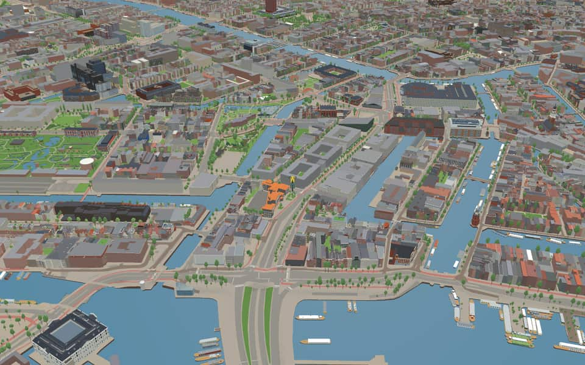
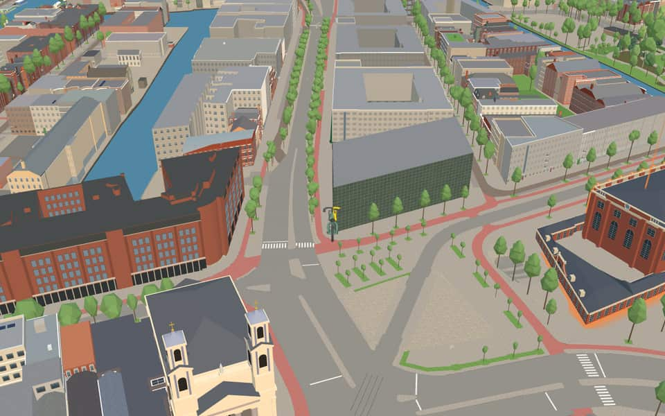
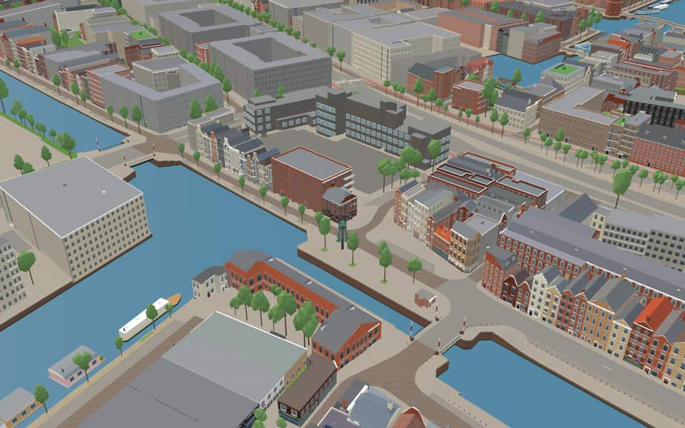

Neighbourhood in Nieuwmarkt/Lastage
Valkenburg
Marken, also called Valkenburg, is a former island laid out in the 16th century. With Uilenburg and Rapenburg it is one of the islands built out into the IJ that came within the city around 1600. Since the works for the IJ tunnel it is no longer an island. nl.wikipedia.org
The name. The name matches Valkenburgerstraat, in the area. The island of Valkenburg or Marken, which came within the city around 1600. The origin of the name Valkenburg is unknown; perhaps there was once a house with a gable stone or a shipyard of that name. A gable stone with Valkenburg is also found elsewhere (Nieuwendijk 62/68). Gemeente Amsterdam street-name register


In the game
Frames from a ride through Valkenburg.



5 more photos of Valkenburg


.jpg){kind=link}


Built here
Buildings modelled one by one for the ride.
Netherlands Film and Television Academy, The Netherlands
Brandweerkazerne Nico
- No picture yet
Politiebureau IJ-tunnel / Brandweerkazerne Amsterdam-Amstelland, IJ-tunnel 2, Amsterdam (1972; one pand shared by fire station and police bureau)
Did you know
Trivia the ride can show you here.
- In 1595 small carpenters' and timber yards were granted here for building, hauling out and repairing barges. Wikipedia (translated from Dutch)
- The Netherlands Film Academy, founded in 1958, is based here. Wikipedia
- Alumni of the Netherlands Film Academy include Paul Verhoeven, director of Total Recall and Basic Instinct. Wikipedia
- Nederlandse Film en Televisie AcademieStudents can specialize in areas ranging from sound design to interactive multimedia effects. en.wikipedia.org
- Nederlandse Film en Televisie AcademieCinematographer Jan de Bont directed the blockbusters Twister and Speed. en.wikipedia.org
- Nederlandse Film en Televisie AcademieActor Carel Struycken appeared in The Addams Family and Twin Peaks. en.wikipedia.org
- ValkenburgerstraatA map from 1599 already showed this island, though it had almost no settlement at that time. nl.wikipedia.org
- ValkenburgerstraatAfter the war ended, Interior Forces troops stationed here to maintain order until Allies arrived. nl.wikipedia.org
Names on the map
Where the canal, bridge and street names come from.
Streets
- Anne FrankstraatAnne Frank, born to Jewish parents in 1929, was in hiding from 1942 to 1944 with her parents and other members of her family in the building at Prinsengracht 263, where she kept a diary. In 1944 the German occupiers discovered the family and deported them. Anne Frank died of illness and exhaustion in 1945 in the Bergen-Belsen concentration camp.
- FebruaripleinAfter the February Strike of 25 and 26 February 1941, a protest strike against the first raids in the Jewish quarter.
- IJ-tunnelThe road through the tunnel under the IJ, opened on 30 October 1968.
- KoeriersterspleinGirls who were active in the resistance in the Second World War. They handed out ration cards, false papers and money, and escorted Jewish children by bicycle or train. The street name is also a tribute to the couriers Miep Gies and Elly Voskuijl, who looked after the people hiding in the Secret Annex, among them Anne Frank.
- MuiderstraatThe street runs towards the town of Muiden (as does the Plantage Muidergracht). Most of the north side of the street was demolished in the Hunger Winter of 1944-45 and the rest in the years after, and the street was then widened to 37 metres.
- Nieuwe FoeliestraatOne of the products, important at the time, brought from the East Indies and stored here in the East India Company's warehouses (foelie is mace).
- Nieuwe HerengrachtAfter the Heren Regeerders (the lords who governed the city; in the old days the city was not administered but ruled). The canal already existed as a ditch when in 1612 it was widened into today's canal, the first of the three main canals. The stretch beyond the Leidsegracht belongs to the expansion of 1658, as does the Nieuwe Herengracht.
- Plantage MiddenlaanIn 1682 the city government decided to lay out a 'plantagie' on this land, which came within the city in 1658: a pleasure ground built up only with summer houses, gardens and a few inns. A grid of straight lines was laid out over the whole area. The avenue running the length of the new Plantage was named Middenweg or Middenlaan, and three cross avenues were added. The summer houses were gradually replaced by houses, so that today only the Wertheimpark recalls the area's former purpose.
- RapenburgOriginally the name of the island bounded by the IJ (now the Oosterdok), the Oudeschans, the Rapenburgwal and the Schippersgrachtje. The main street took the island's name. The origin of the name is unknown (no explanation has been found for the Leiden Rapenburg either).
- RapenburgerpleinOriginally the name of the island bounded by the IJ (now the Oosterdok), the Oudeschans, the Rapenburgwal and the Schippersgrachtje. The main street took the island's name. The origin of the name is unknown (no explanation has been found for the Leiden Rapenburg either).
- RapenburgerstraatOriginally the name of the island bounded by the IJ (now the Oosterdok), the Oudeschans, the Rapenburgwal and the Schippersgrachtje. The main street took the island's name. The origin of the name is unknown (no explanation has been found for the Leiden Rapenburg either).
- ValkenburgerstraatThe island of Valkenburg or Marken, which came within the city around 1600. The origin of the name Valkenburg is unknown; perhaps there was once a house with a gable stone or a shipyard of that name. A gable stone with Valkenburg is also found elsewhere (Nieuwendijk 62/68).
1 other street without a recorded story
Meester Visserplein